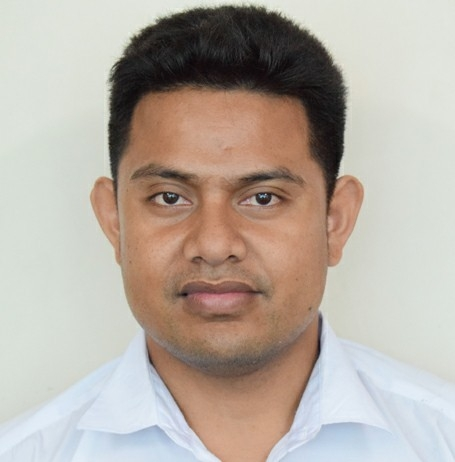

Kaarubea WDD130
Hello everyone! My name is Kaarubea Riben, and I'm thrilled to have the opportunity to share a bit about myself. I come from the beautiful atoll of Maiana, which is nestled within the enchanting nation of Kiribati in the central Pacific Ocean. Living amidst the stunning islands of Kiribati, I have a deep appreciation for the natural wonders that surround me. The pristine beaches, crystal-clear waters, and vibrant marine life have always captivated my heart and soul. Each day brings a sense of awe and gratitude for the breathtaking beauty of my home. One of my greatest passions is playing soccer. The thrill of the game, the camaraderie with my teammates, and the rush of scoring a goal create an exhilarating experience that I cherish. Soccer has not only helped me stay active and physically fit but has also taught me valuable lessons in teamwork, perseverance, and dedication. Beyond soccer, I find joy in exploring other interests and hobbies. Whether it's immersing myself in the captivating world of literature, embarking on adventurous outdoor activities, or connecting with friends and loved ones, I believe in embracing every moment with enthusiasm and an open mind. I'm excited to be here, and I look forward to engaging in conversations, sharing experiences, and learning from all of you. If you have any questions or would like to discuss anything, feel free to reach out. Let's embark on this journey together